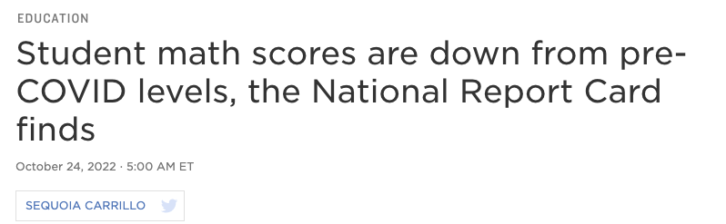
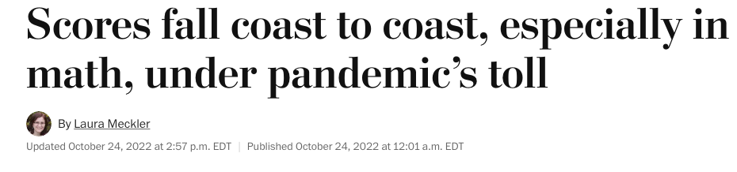
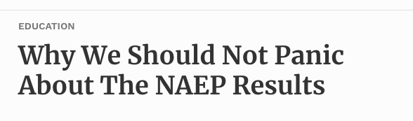
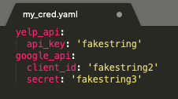
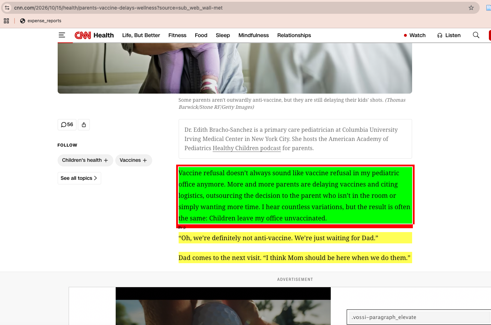

import pandas as pd
import numpy as np
import requests # for calling APIs and downloading websites
import yaml # for loading credentials
from bs4 import BeautifulSoup # for parsing html
import time # to put the system to sleep
import random # for random numbers
import re # regular expressions
pd.set_option('display.max_columns', None)
import warnings
warnings.filterwarnings("ignore")PPOL 5203 - Data Science I: Foundations
Week 9: Acquiring data via APIs and scraping
Professor: Rebecca Johnson
Plans for Today
Three routes to acquiring data
APIs: terminology and basics
APIs in practice: three examples
- No credentials and no wrapper (NAEP data API)
- Credentials and no wrapper (Yelp API)
- Credentials and a wrapper (Census API via the
censuspackage)
Scraping static websites with
requestsandBeautifulSoup
Setup
Acquiring data
Three general routes to acquiring data
Exists already
csv or excel data like we’ve been working with for problem sets
API
Use code (rather than point and click) to create data or flat files; most relevant for “high-velocity” data that changes frequently (e.g., social media posts; job postings)
Scraping
APIs are a “front door” to a website: developers provide an easy way to get content but also set limits (what content you can get; how much you can pull in a given period)
Scraping is a “back door” for when there’s no API or when we need content beyond the structured fields the API returns
Why go through the effort to use data that doesn’t exist already?
Guarantees that you’re working with original data \(\implies\) research question is likely novel
Study rapidly changing phenomena missed in static flat files
Rule of thumb: if you can use an API to access a dataset, that’s where you will want to go — APIs are developed by the data owners, so they’re often more secure, practical, and organized than scraping
APIs: terminology and basics
Terminology
API: application programming interface; a way to ask an app or website for something and get something in return
Call the API: sending a request for something to the API
Response: a message back telling us whether we got something back or whether the call returned an error
JSON: if we get something back, it’s often stored in
jsonformat — a text string with a structure similar to the data structure of a dictionary; pretty easy to convert to apandasDataFrameWrapper: a language-specific module or package that simplifies calling an API from that language (e.g.,
censusis a Python wrapper for the Census Bureau’s API)
Three examples we’ll walk through
- API with no credentials and no wrapper (NAEP data API)
- API with credentials and no wrapper (Yelp API)
- API with credentials and a wrapper (Census API via the
censuspackage)
Example 1: API with no credentials and no wrapper (NAEP)
NAEP in the news



High-level overview of steps: APIs that don’t need credentials
- Construct a query that tells the API what we want to pull
- Use
requests.get(querystring)to call the API - Examine the response: a message from the API telling us whether it returned something
- If the response returned something, extract the content of the response and make it usable
Step 1: construct a query
Generic example:
https://baseurl.com/onething=something&anotherthing=somethingelse
Specific NAEP example (wrap in parentheses to split the string across lines):
example_naep_query = (
'https://www.nationsreportcard.gov/'
'Dataservice/GetAdhocData.aspx?'
'type=data&subject=writing&grade=8&'
'subscale=WRIRP&variable=GENDER&'
'jurisdiction=NP&stattype=MN:MN&'
'Year=2011')
example_naep_query'https://www.nationsreportcard.gov/Dataservice/GetAdhocData.aspx?type=data&subject=writing&grade=8&subscale=WRIRP&variable=GENDER&jurisdiction=NP&stattype=MN:MN&Year=2011'Breaking things down:
nationsreportcard...GetAdhocData.aspx?: the “base url” we add parameters tosubject: type of parametersubject=writing: specific value for that parameter (error if we feed it a subject that doesn’t exist)- And so on…
Step 2: call the API
Steps 3-4: if the response indicates something usable, extract content
## we got a usable response, so get json of status and result
naep_resp_j = naep_resp.json()
naep_resp_j.keys()dict_keys(['status', 'serviceVersion', 'dwellTimeMS', 'avgWebHostCPUTotalLoad', 'dataHitType', 'Source', 'result'])## extract contents in 'result' key
## and convert to dataframe
naep_resp_d = pd.DataFrame(naep_resp_j['result'])
naep_resp_d[['year', 'jurisLabel', 'variableLabel', 'varValueLabel', 'value']]| year | jurisLabel | variableLabel | varValueLabel | value | |
|---|---|---|---|---|---|
| 0 | 2011 | National public | Sex | Male | 139.099505 |
| 1 | 2011 | National public | Sex | Female | 158.567105 |
What do I mean by “no wrapper”?
- We write a query to request something from the API
- While the request syntax differs across languages, the query is the same — e.g., could use the same query and run the
Rcode below to get the content
In-class activity
See Activity 1 in notebook
Example 2: API with credentials and no wrapper (Yelp)
What changes about the general steps?
- Acquire credentials for the API: these may be an API key (single string) or a client ID and secret (strings); can store in a
yamlcredentials file - Construct a query that tells the API what we want to pull
- Two paths:
- Use credentials to authenticate and then call the API: we’ll see an example of this with the Census API/wrapper
- Feed the API your credentials when you call it: we’ll see an example of this with Yelp
- Examine the response: a message from the API telling us whether it returned something
- If the response returned something, extract the content of the response and make it usable
Step 1: acquire credentials
- Varies across APIs, but generally involves going to the “developer’s portal,” creating an account, and obtaining credentials
- Examples:
- Google developer’s console (e.g., geocoding API; maps API): https://console.cloud.google.com
- Facebook: https://developers.facebook.com/docs/development
- Census Bureau: https://api.census.gov/data/key_signup.html
- Yelp: https://business.yelp.com/data/products/fusion/
- Terminology is a bit odd for social science applications: you often set up “an application” to get credentials, even though we’re usually doing a one-way pull of data rather than developing an app
Step 1: store those credentials somewhere
- Your key or client ID/secret are meant to be unique to you, like a password, so you generally shouldn’t print them in code
- Can use any text editor to make a
yamlfile (structured similar to a dictionary); screenshot below with fake credentials

Step 1: load the file with credentials
Step 2: construct a query
- Same process as before
- Focus on the Yelp Fusion API.
- We’ll initially rfocus on focus on Business Search, since that returns a Yelp-specific ID: documentation
Step 2: construct a query
## defining inputs
base_url = "https://api.yelp.com/v3/businesses/search?"
my_name = "restaurants"
my_location = "Washington,DC,20001"
## combining them into a query
yelp_genquery = (
'{base_url}'
'term={name}'
'&location={loc}').format(
base_url = base_url,
name = my_name,
loc = my_location)
yelp_genquery'https://api.yelp.com/v3/businesses/search?term=restaurants&location=Washington,DC,20001'Step 3: authenticate and call the API
For Yelp, we feed a dictionary with our key directly into the get call via the optional headers parameter; for other APIs, we sometimes authenticate in a separate step
Output of a successful call:
<Response [200]>Output of an unsuccessful call:
<Response [400]>Step 4: if output successful, make results usable
[{'id': 'kVCCVqIikApTuD_SGHBwHg',
'alias': 'unconventional-diner-washington-3',
'name': 'Unconventional Diner',
'image_url': 'https://s3-media0.fl.yelpcdn.com/bphoto/N80epEa-4oW3DcLTrigv0A/o.jpg',
'is_closed': False,
'url': 'https://www.yelp.com/biz/unconventional-diner-washington-3?adjust_creative=fZtFlUvyaR-hVIafscUD-Q&utm_campaign=yelp_api_v3&utm_medium=api_v3_business_search&utm_source=fZtFlUvyaR-hVIafscUD-Q',
'review_count': 3512,
'categories': [{'alias': 'breakfast_brunch', 'title': 'Breakfast & Brunch'},
{'alias': 'venues', 'title': 'Venues & Event Spaces'},
{'alias': 'sandwiches', 'title': 'Sandwiches'}],
'rating': 4.4,
'coordinates': {'latitude': 38.906139, 'longitude': -77.0238},
'transactions': ['delivery', 'pickup'],
'price': '$$',
'location': {'address1': '1207 9th St NW',
'address2': '',
'address3': '',
'city': 'Washington, DC',
'zip_code': '20001',
'country': 'US',
'state': 'DC',
'display_address': ['1207 9th St NW', 'Washington, DC 20001']},
'phone': '+12028470122',
'display_phone': '(202) 847-0122',
'distance': 687.569910611279,
'business_hours': [{'open': [{'is_overnight': False,
'start': '0700',
'end': '2200',
'day': 0},
{'is_overnight': False, 'start': '0700', 'end': '2200', 'day': 1},
{'is_overnight': False, 'start': '0700', 'end': '2200', 'day': 2},
{'is_overnight': False, 'start': '0700', 'end': '2200', 'day': 3},
{'is_overnight': False, 'start': '0700', 'end': '2200', 'day': 4},
{'is_overnight': False, 'start': '0700', 'end': '2200', 'day': 5},
{'is_overnight': False, 'start': '0700', 'end': '2200', 'day': 6}],
'hours_type': 'REGULAR',
'is_open_now': True}],
'attributes': {'menu_url': 'http://unconventionaldiner.com'}},
{'id': 'j9qYRR8HCXm_GEnetijOGA',
'alias': 'le-diplomate-washington',
'name': 'Le Diplomate',
'image_url': 'https://s3-media0.fl.yelpcdn.com/bphoto/NIzlZ6HK-w_KvjjDl7rZew/o.jpg',
'is_closed': False,
'url': 'https://www.yelp.com/biz/le-diplomate-washington?adjust_creative=fZtFlUvyaR-hVIafscUD-Q&utm_campaign=yelp_api_v3&utm_medium=api_v3_business_search&utm_source=fZtFlUvyaR-hVIafscUD-Q',
'review_count': 5835,
'categories': [{'alias': 'french', 'title': 'French'},
{'alias': 'breakfast_brunch', 'title': 'Breakfast & Brunch'},
{'alias': 'cocktailbars', 'title': 'Cocktail Bars'},
{'alias': 'french', 'title': 'French'},
{'alias': 'breakfast_brunch', 'title': 'Breakfast & Brunch'},
{'alias': 'cocktailbars', 'title': 'Cocktail Bars'},
{'alias': 'french', 'title': 'French'},
{'alias': 'breakfast_brunch', 'title': 'Breakfast & Brunch'},
{'alias': 'cocktailbars', 'title': 'Cocktail Bars'}],
'rating': 4.3,
'coordinates': {'latitude': 38.91135, 'longitude': -77.03157},
'transactions': ['delivery', 'pickup'],
'price': '$$$',
'location': {'address1': '1601 14th St NW',
'address2': '',
'address3': '',
'city': 'Washington, DC',
'zip_code': '20009',
'country': 'US',
'state': 'DC',
'display_address': ['1601 14th St NW', 'Washington, DC 20009']},
'phone': '+12023323333',
'display_phone': '(202) 332-3333',
'distance': 1223.3869582711193,
'business_hours': [{'open': [{'is_overnight': False,
'start': '1130',
'end': '2300',
'day': 0},
{'is_overnight': False, 'start': '1130', 'end': '2300', 'day': 1},
{'is_overnight': False, 'start': '1130', 'end': '2300', 'day': 2},
{'is_overnight': False, 'start': '1130', 'end': '2300', 'day': 3},
{'is_overnight': False, 'start': '1130', 'end': '0000', 'day': 4},
{'is_overnight': False, 'start': '0930', 'end': '0000', 'day': 5},
{'is_overnight': False, 'start': '0930', 'end': '2300', 'day': 6}],
'hours_type': 'REGULAR',
'is_open_now': True}],
'attributes': {'menu_url': 'https://lediplomatedc.com/#menus'}}]The businesses key of the json has a dictionary for each business, but with some nesting to deal with variable lengths (e.g., within location: address1, address2, etc.) that might produce odd things when we convert to a DataFrame
Two approaches to step 4
Approach 1: more automatic conversion that leaves nested fields as lists/dictionaries
| id | alias | name | image_url | is_closed | url | review_count | categories | rating | coordinates | transactions | price | location | phone | display_phone | distance | business_hours | attributes | |
|---|---|---|---|---|---|---|---|---|---|---|---|---|---|---|---|---|---|---|
| 0 | kVCCVqIikApTuD_SGHBwHg | unconventional-diner-washington-3 | Unconventional Diner | https://s3-media0.fl.yelpcdn.com/bphoto/N80epE... | False | https://www.yelp.com/biz/unconventional-diner-... | 3512 | [{'alias': 'breakfast_brunch', 'title': 'Break... | 4.4 | {'latitude': 38.906139, 'longitude': -77.0238} | [delivery, pickup] | $$ | {'address1': '1207 9th St NW', 'address2': '',... | +12028470122 | (202) 847-0122 | 687.569911 | [{'open': [{'is_overnight': False, 'start': '0... | {'menu_url': 'http://unconventionaldiner.com'} |
| 1 | j9qYRR8HCXm_GEnetijOGA | le-diplomate-washington | Le Diplomate | https://s3-media0.fl.yelpcdn.com/bphoto/NIzlZ6... | False | https://www.yelp.com/biz/le-diplomate-washingt... | 5835 | [{'alias': 'french', 'title': 'French'}, {'ali... | 4.3 | {'latitude': 38.91135, 'longitude': -77.03157} | [delivery, pickup] | $$$ | {'address1': '1601 14th St NW', 'address2': ''... | +12023323333 | (202) 332-3333 | 1223.386958 | [{'open': [{'is_overnight': False, 'start': '1... | {'menu_url': 'https://lediplomatedc.com/#menus'} |
| 2 | uDeOuGCBMFgGE0c5WjxH1g | gypsy-kitchen-dc-washington | Gypsy Kitchen DC | https://s3-media0.fl.yelpcdn.com/bphoto/CNNAw4... | False | https://www.yelp.com/biz/gypsy-kitchen-dc-wash... | 1061 | [{'alias': 'tapasmallplates', 'title': 'Tapas/... | 4.3 | {'latitude': 38.91488, 'longitude': -77.03155} | [delivery, pickup] | $$ | {'address1': '1825 14th St NW', 'address2': ''... | +12027650500 | (202) 765-0500 | 1324.244080 | [{'open': [{'is_overnight': False, 'start': '1... | {'menu_url': 'https://www.gypsykitchendc.com/m... |
Two approaches to step 4
Approach 2: only retaining columns that are already strings
Can also make more complicated function that formats specific, non-string keys like the business hours to a more intuitive column format
def clean_yelp_json(one_biz):
## restrict to str cols
d_str = {key:value for key, value in one_biz.items() if type(value) == str}
df_str = pd.DataFrame(d_str, index = [d_str['id']])
return(df_str)
yelp_stronly = [clean_yelp_json(one_b)
for one_b in yelp_genjson['businesses']]
yelp_stronly_df = pd.concat(yelp_stronly)
yelp_stronly_df.head(3)| id | alias | name | image_url | url | price | phone | display_phone | |
|---|---|---|---|---|---|---|---|---|
| kVCCVqIikApTuD_SGHBwHg | kVCCVqIikApTuD_SGHBwHg | unconventional-diner-washington-3 | Unconventional Diner | https://s3-media0.fl.yelpcdn.com/bphoto/N80epE... | https://www.yelp.com/biz/unconventional-diner-... | $$ | +12028470122 | (202) 847-0122 |
| j9qYRR8HCXm_GEnetijOGA | j9qYRR8HCXm_GEnetijOGA | le-diplomate-washington | Le Diplomate | https://s3-media0.fl.yelpcdn.com/bphoto/NIzlZ6... | https://www.yelp.com/biz/le-diplomate-washingt... | $$$ | +12023323333 | (202) 332-3333 |
| uDeOuGCBMFgGE0c5WjxH1g | uDeOuGCBMFgGE0c5WjxH1g | gypsy-kitchen-dc-washington | Gypsy Kitchen DC | https://s3-media0.fl.yelpcdn.com/bphoto/CNNAw4... | https://www.yelp.com/biz/gypsy-kitchen-dc-wash... | $$ | +12027650500 | (202) 765-0500 |
In-class activity
See Activity 2 in notebook
Example 3: API with credentials and a wrapper (Census)
Why Census data?
- The American Community Survey (ACS) is the Census Bureau’s ongoing survey of ~3.5 million addresses per year; it’s the main source of detailed data on income, poverty, housing, education, language, and more
- Available for many geographies: nation, states, counties, census tracts, and smaller
- Used to allocate federal funding, draw districts, and in countless policy evaluations — and it’s a very common “right-hand side” dataset to merge onto your own data
- Two common versions:
- ACS 1-year: more current, but only for areas with 65,000+ people
- ACS 5-year: pooled over five years; available down to small geographies like tracts
The Census API and the census wrapper
- API: https://api.census.gov — requires a free API key
- Wrapper: the
censuspackage (developed by DataMade) - Recall our earlier steps for NAEP and Yelp:
- Set up credentials (where relevant)
- Constructed a query based on the API documentation
- Used
requests.get(query)to call the API - Got a response
- Extracted the content of the response and turned it into usable data
- The wrapper simplifies steps 2-5: instead of a long query string, we call methods that name the dataset and geography we want, and get back data that’s easy to convert to a DataFrame
- Downside: we need to learn the wrapper’s methods (but this is often easier than constructing queries ourselves)
Step 1: acquire and store credentials
- Request a key here: https://api.census.gov/data/key_signup.html — it arrives by email; you need to click the link in the email to activate it
- Add it to your
yamlcredentials file, e.g.:
- Load it the same way as the Yelp key:
Step 2: find the variables you want
- ACS variables have codes like
B19013_001E:B19013: the table (median household income)_001: the line within the tableE: estimate (vs.Mfor margin of error)
- Search the variable list for a dataset and year: https://api.census.gov/data/2024/acs/acs5/variables.html
- Some variables we’ll use:
| Variable | Description |
|---|---|
NAME |
Name of the geography |
B01003_001E |
Total population |
B19013_001E |
Median household income |
B17001_001E |
Population for whom poverty status is determined |
B17001_002E |
Population with income below the poverty level |
Without a wrapper: same structure as NAEP
## construct the query
census_query = (
'https://api.census.gov/data/2024/acs/acs5?'
'get=NAME,B19013_001E&'
'for=county:*&in=state:24&'
f'key={CENSUS_KEY}')
## call the API
census_resp = requests.get(census_query)
## the json is a list of lists; the first list is the column names
census_json = census_resp.json()
md_income_raw = pd.DataFrame(census_json[1:], columns = census_json[0])
md_income_raw.head()| NAME | B19013_001E | state | county | |
|---|---|---|---|---|
| 0 | Allegany County, Maryland | 59603 | 24 | 001 |
| 1 | Anne Arundel County, Maryland | 124911 | 24 | 003 |
| 2 | Baltimore County, Maryland | 91768 | 24 | 005 |
| 3 | Calvert County, Maryland | 133922 | 24 | 009 |
| 4 | Caroline County, Maryland | 68457 | 24 | 011 |
Without a wrapper: same structure as NAEP
## construct the query
census_query = (
'https://api.census.gov/data/2024/acs/acs5?'
'get=NAME,B19013_001E&'
'for=county:*&in=state:24&'
f'key={CENSUS_KEY}')- Notice that the query has to encode the dataset (
2024/acs/acs5), the variables (get=), and the geography (for=andin=) - Values come back as strings, so we’d still need to convert them to numbers
With a wrapper: install and connect
Census(CENSUS_KEY): creates a client object that stores our key, so we don’t need to add it to each callus: a helper package with state names and FIPS codes (e.g.,states.MD.fipsreturns'24')- The client has an attribute for each dataset, e.g.
c.acs5,c.acs1,c.acs5dp(data profiles), andc.pl(redistricting data) - Each dataset has methods for each geography, e.g.
.state(),.state_county(),.state_county_tract()
Same query as before, using the wrapper
Breaking things down:
c.acs5: the dataset (ACS 5-year; defaults to the most recent year).state_county(): the geography (counties within a state)fields: tuple of variables we wantstate_fips: which statecounty_fips = Census.ALL: all counties in that state (Census.ALLis the wrapper’s version of*in the raw query)
Same query as before, using the wrapper
| NAME | B19013_001E | state | county | |
|---|---|---|---|---|
| 0 | Allegany County, Maryland | 59603.0 | 24 | 001 |
| 1 | Anne Arundel County, Maryland | 124911.0 | 24 | 003 |
| 2 | Baltimore County, Maryland | 91768.0 | 24 | 005 |
| 3 | Calvert County, Maryland | 133922.0 | 24 | 009 |
| 4 | Caroline County, Maryland | 68457.0 | 24 | 011 |
- Returns a list of dictionaries (one per county) that converts directly to a DataFrame
Examples of three things we can do
- Pull a variable for every state
- Pull several variables for counties and construct new measures
- Pull small-area (tract) data and build join keys to merge with other data
Task 1: pull a variable for every state
## pull total population and median household income for all states
state_data = c.acs5.state(fields = ('NAME', 'B01003_001E', 'B19013_001E'),
state_fips = Census.ALL)
state_df = (pd.DataFrame(state_data)
.rename(columns = {'B01003_001E': 'total_pop',
'B19013_001E': 'median_hh_income'})
.sort_values(by = 'median_hh_income', ascending = False))
state_df.head()| NAME | total_pop | median_hh_income | state | |
|---|---|---|---|---|
| 8 | District of Columbia | 681294.0 | 109870.0 | 11 |
| 21 | Massachusetts | 7044056.0 | 103960.0 | 25 |
| 20 | Maryland | 6206011.0 | 103678.0 | 24 |
| 30 | New Jersey | 9343809.0 | 103556.0 | 34 |
| 11 | Hawaii | 1445235.0 | 100389.0 | 15 |
- Can pull an earlier year with the
yearargument — e.g.,c.acs5.state(..., year = 2019) - Can use the same code with
c.acs1for more recent estimates (only for larger geographies)
Examples of three things we can do
- Pull a variable for every state
- Pull several variables for counties and construct new measures
- Pull small-area (tract) data and build join keys to merge with other data
Task 2: pull county data and construct a poverty rate
## variables to pull, with readable names
county_vars = {'NAME': 'name',
'B01003_001E': 'total_pop',
'B19013_001E': 'median_hh_income',
'B17001_001E': 'pov_universe',
'B17001_002E': 'pov_below'}
## pull for all counties in Maryland
md_counties = c.acs5.state_county(fields = tuple(county_vars.keys()),
state_fips = states.MD.fips,
county_fips = Census.ALL)
## convert to a dataframe, rename, and construct poverty rate
md_counties_df = (pd.DataFrame(md_counties)
.rename(columns = county_vars)
.assign(pov_rate = lambda df: df.pov_below / df.pov_universe)
.sort_values(by = 'pov_rate', ascending = False))
md_counties_df[['name', 'total_pop', 'median_hh_income', 'pov_rate']].head()| name | total_pop | median_hh_income | pov_rate | |
|---|---|---|---|---|
| 23 | Baltimore city, Maryland | 573243.0 | 62177.0 | 0.197497 |
| 8 | Dorchester County, Maryland | 32754.0 | 61839.0 | 0.171352 |
| 0 | Allegany County, Maryland | 67452.0 | 59603.0 | 0.168518 |
| 18 | Somerset County, Maryland | 24822.0 | 64943.0 | 0.163588 |
| 21 | Wicomico County, Maryland | 104914.0 | 76210.0 | 0.139374 |
- Storing variable codes and readable names in a dictionary lets us use the keys to pull the data and the whole dictionary to rename
- Why use the poverty “universe” as the denominator rather than total population? Poverty status isn’t determined for everyone (e.g., people in college dorms or institutions)
Examples of three things we can do
- Pull a variable for every state
- Pull several variables for counties and construct new measures
- Pull small-area (tract) data and build join keys to merge with other data
Task 3: pull tract-level data
## DC has a single county-equivalent with FIPS code 001
dc_tracts = c.acs5.state_county_tract(fields = tuple(county_vars.keys()),
state_fips = states.DC.fips,
county_fips = '001',
tract = Census.ALL)
dc_tracts_df = (pd.DataFrame(dc_tracts)
.rename(columns = county_vars))
## the census uses large negative numbers to flag values
## that can't be computed (e.g., median income for a tract with few households)
dc_tracts_df['median_hh_income'] = np.where(dc_tracts_df.median_hh_income < 0,
np.nan,
dc_tracts_df.median_hh_income)- Always check for these sentinel values (e.g.,
-666666666) before summarizing — otherwise they’ll drag down means dramatically
Task 3: build a join key
## the geography columns come back as strings with leading zeros
dc_tracts_df[['state', 'county', 'tract']].head()
## combine into the standard 11-digit tract GEOID
dc_tracts_df['GEOID'] = (dc_tracts_df.state +
dc_tracts_df.county +
dc_tracts_df.tract)| state | county | tract | |
|---|---|---|---|
| 0 | 11 | 001 | 000101 |
| 1 | 11 | 001 | 000102 |
| 2 | 11 | 001 | 000201 |
| 3 | 11 | 001 | 000202 |
| 4 | 11 | 001 | 000300 |
- The GEOID (state + county + tract FIPS codes) is the standard key for merging Census data onto other datasets (e.g., school locations; crime incidents geocoded to tracts; shapefiles for mapping)
- Recall the merge diagnostics from week 7: keep these codes as strings — converting to integers strips leading zeros (e.g., Alabama’s state FIPS is
01) and leads to failed merges
In-class activity
See Activity 3 in notebook
Scraping static websites
What is scraping?
Scraping: automatically collecting data available on websites. In theory, you could collect website data by hand — but in a world of abundant data, this is rarely feasible
Examples of websites that have been scraped for research:
- Electoral data from many different countries
- Composition of elites around the world
- Wikipedia
- Political manifestos
- Fact-checking news
- Property prices from Zillow
Scraping can be summarized as:
- Leveraging the structure of a website to grab its contents
- Using a programming environment (such as R, Python, Java, etc.) to systematically extract that content
- Accomplishing the above in an “unobtrusive” and legal way
Ethical challenges with scraping
Web scraping is legal as long as the scraped data is publicly available and the scraping activity does not harm the website being scraped — two hugely relevant conditions
- Each call to a web server takes time, server cycles, and memory; massive automated requests can overload a site, taking it offline or causing the site administrator to ban your IP (see denial-of-service attack)
- Best practice: only collect public information (e.g., public posts are OK; content from private groups where members expect privacy is not)
Good practices for scraping:
- Respect
robots.txt - Don’t hit servers too often; slow your code down to the speed a human would browse
- Find trusted source sites
- Avoid scraping during peak hours
- Use data responsibly
Scraping routine
- Step 1: Find a website with information you want to collect
- Step 2: Understand the website
- Step 3: Write code to collect one realization of the data
- Step 4: Build a scraper — generalize your code into a function
And repeat!
Step 1: find a website… but what is a website?
A website is generally a combination of HTML, CSS, XML, PHP, and JavaScript. We will care mostly about HTML and CSS
Static vs. dynamic websites:
- Static websites: built with HTML — everything you see is in the source behind the website
- Dynamic websites: produced by JavaScript — sites you browse and click on where the url doesn’t change; typically powered by a database deep within the programming
Today we focus on static websites using the Python library BeautifulSoup; I can share resources for dynamic website scraping using Selenium
HTML
HTML = HyperText Markup Language: a markup language used to create web pages (not a programming language like Python, R, or Java). Web browsers read HTML documents and render them into visible web pages
HTML tags
HTML code is structured using tags, and information is organized hierarchically from top to bottom
Some of the most important tags for scraping:
p– paragraphsa href– linksdiv– divisionsh– headingstable– tables
See here for more about html tags
Scraping is all about finding tags and collecting the data associated with them
What else exists in HTML beyond tags?
The tags are the target. The information we need usually comes from the text and attributes of the tag — very often, your work will consist of finding the tag and then capturing the information you need

Source: semrush
Step 2: understand the website
A huge part of scraping is understanding your website and finding the tags/information you’re interested in. Two ways to go about it:
- Inspect the website:
command+shift+i, or select an element, right click, and choose Inspect- See an example in practice (Source: Ultimate Guide to Web Scraping with Python by Brenda Marting)
- Use SelectorGadget: a tool that lets us use CSS selectors to scrape websites
- See the documentation and a tutorial
Break: install SelectorGadget
Step 3: collect a realization of the data
Two main libraries:
requests: to make aget()request and access the html behind the pagesBeautifulSoup: to parse the html
See this tutorial on the difference between parsing html with BeautifulSoup and using text-mining methods to scrape a website
Example: CNN — get request to collect html data
# get access to the website
url = "https://www.cnn.com/2026/10/15/health/parents-vaccine-delays-wellness?source=sub_web_wall-met"
page = requests.get(url)
# check object type - object class requests
type(page)requests.models.Responseb' <!DOCTYPE html>\n<html lang="en" data-uri="cms.cnn.com/_pages/cmv8qiku4000028p7fj6e79gw@published" data-layout-uri="cms.cnn.com/_layouts/layout-article-elevate/instances/health-article-elevate_medium-v1@published" data-site="cnn">\n <head>\n<link rel="preload" href="/fonts/cnn/cnn_sans_display-v1.woff2" as="font" type="font/woff2" crossorigin="anonymous">\n<link rel="preload" href="/fonts/cnn/cnn_sans_display-medium-v1.woff2" as="font" type="font/woff2" crossorigin="anonymous">\n<link rel="preload'Saving and loading html locally
After we make a request and retrieve a web page’s content, we can store it locally with Python’s open() function — saving the html source avoids hitting the website multiple times
# open a locally saved html
with open("../datasets/cnn_example_article", 'rb') as f:
html = f.read()
# see it
print(html[0:500])b' <!DOCTYPE html>\n<html lang="en" data-uri="cms.cnn.com/_pages/cmv8qiku4000028p7fj6e79gw@published" data-layout-uri="cms.cnn.com/_layouts/layout-article-elevate/instances/health-article-elevate_medium-v1@published" data-site="cnn">\n <head>\n<link rel="preload" href="/fonts/cnn/cnn_sans_display-v1.woff2" as="font" type="font/woff2" crossorigin="anonymous">\n<link rel="preload" href="/fonts/cnn/cnn_sans_display-medium-v1.woff2" as="font" type="font/woff2" crossorigin="anonymous">\n<link rel="preload'Here comes BeautifulSoup
A BeautifulSoup object is a parser: it lets us easily access elements from the raw html
# create a bs object
# input 1: request content; input 2: tell it you need an html parser
soup = BeautifulSoup(page.content, 'html.parser')
# look at the raw code of the downloaded website
print(soup.prettify()[:1000])<!DOCTYPE html>
<html data-layout-uri="cms.cnn.com/_layouts/layout-article-elevate/instances/health-article-elevate_medium-v1@published" data-site="cnn" data-uri="cms.cnn.com/_pages/cmv8qiku4000028p7fj6e79gw@published" lang="en">
<head>
<link as="font" crossorigin="anonymous" href="/fonts/cnn/cnn_sans_display-v1.woff2" rel="preload" type="font/woff2"/>
<link as="font" crossorigin="anonymous" href="/fonts/cnn/cnn_sans_display-medium-v1.woff2" rel="preload" type="font/woff2"/>
<link as="font" crossorigin="anonymous" href="/fonts/cnn/cnn_sans_display-bold-v1.woff2" rel="preload" type="font/woff2"/>
<link as="font" crossorigin="anonymous" href="/fonts/cnn/noto_serif_display-v1.woff2" rel="preload" type="font/woff2"/>
<link href="//tpc.googlesyndication.com" rel="dns-prefetch"/>
<link href="//tpc.googlesyndication.com" rel="preconnect"/>
<link href="//pagead2.googlesyndication.com" rel="dns-prefetch"/>
<link href="//pagead2.googlesyndication.com" rel="preconnect"/>
<link Here comes BeautifulSoup
The functions we’ll use the most:
.find_all(): to find tags by their names.select(): to select tags using a CSS selector.get_text(): to access the text in the tag["attr"]: to access attributes of a tag
Grabbing the text of the story
The text of a story is often under the tag <p> for paragraph
<p class="editor-note-elevate vossi-editor-note_elevate inline-placeholder" data-article-gutter="true" data-component-name="editor-note" data-editable="text" data-uri="cms.cnn.com/_components/editor-note/instances/cmv8vvabu00023b6r4cy7tivq@published">
Dr. Edith Bracho-Sanchez is a primary care pediatrician at Columbia University Irving Medical Center in New York City. She hosts the American Academy of Pediatrics <a href="https://www.healthychildren.org/English/tips-tools/healthy-children-podcast/Pages/podcast.aspx" target="_blank">Healthy Children podcast</a> for parents.
</p>Removing html tags with .get_text()
# get the text f the first paragraph
# this is what is in between the tags <p> TEXT </p>
cnn_par[0].get_text()'\n Dr. Edith Bracho-Sanchez is a primary care pediatrician at Columbia University Irving Medical Center in New York City. She hosts the American Academy of Pediatrics Healthy Children podcast for parents.\n'# use our friend list comprehension to parse all
all_par = [par.get_text() for par in cnn_par]
all_par[-3:]['© 2026 Cable News Network. All Rights Reserved. CNN Sans ™ & © 2016 Cable News Network.',
'Scan the QR code to download the CNN app on Google Play.',
'Scan the QR code to download the CNN app from the Apple Store.']We collected some paragraphs at the bottom that aren’t the story text: <p> is used in multiple places on the page — e.g., the last element is the page footer
Solution: be more specific with a CSS selector
- A CSS selector is a pattern used to select and style one or more elements in an HTML document — a way to chain multiple styles and attributes of an html file
- Another option is XPATH, which can be super useful to learn but is a bit more complicated for beginners
- See this tutorial to understand the concept of a CSS selector
Solution: be more specific with a CSS selector

Solution: be more specific with a CSS selector
# use a css selector to target specific content
cnn_par = soup.select(".vossi-paragraph_elevate")
cnn_par[-1]<p class="paragraph-elevate inline-placeholder vossi-paragraph_elevate" data-article-gutter="true" data-component-name="paragraph" data-editable="text" data-uri="cms.cnn.com/_components/paragraph/instances/cmv8qpbof000x3b6rqc3cpk6o@published">
At the end of the day, however, I don’t particularly care whether a parent calls themselves pro- or anti-vaccine. Viruses and bacteria don’t care either. What matters is the protection against measles, mumps, rubella, influenza, chicken pox and more — not the label. For every child to be protected, they need to get their shots, today.
</p>Cleaning the story text
'Vaccine refusal doesn’t always sound like vaccine refusal in my pediatric office anymore. More and more parents are delaying vaccines and citing logistics, outsourcing the decision to the parent who isn’t in the room or simply wanting more time. I hear countless variations, but the result is often the same: Children leave my office unvaccinated.'# clean and join together with string methods
story_text = "\n".join([i.strip() for i in story_content])
print(story_text[0:1000])Vaccine refusal doesn’t always sound like vaccine refusal in my pediatric office anymore. More and more parents are delaying vaccines and citing logistics, outsourcing the decision to the parent who isn’t in the room or simply wanting more time. I hear countless variations, but the result is often the same: Children leave my office unvaccinated.
“Oh, we’re definitely not anti-vaccine. We’re just waiting for Dad.”
Dad comes to the next visit. “I think Mom should be here when we do them.”
“We are definitely going to vaccinate but we have a birthday party coming up, doctor; wouldn’t want her to be under the weather!”
Another parent agrees to the vaccines, then slips out of the office before the nurse returns with them because the child is “beside himself.” Minutes earlier the kid was happily playing in the exam room.
Vaccination has become so socially and politically loaded that some parents don’t want to identify with either camp. Rather than explicitly refusing, they postpone.
This is aWhat else can we collect from this story? Title, date, and author
# title
css_loc = "#maincontent"
story_title = soup.select(css_loc)[0].get_text()
print(story_title.strip())For more parents, ‘vaccine refusal’ is becoming vaccine delay, but it’s no less dangerousStep 4: build a scraper
Once your scraper works for a single case, generalize it by creating a function — and build in good practices that imitate human behavior
def cnn_scraper(url=None):
'''
this function scrapes relevant content from the cnn website
input: str, url from cnn
'''
# get access to the website
page = requests.get(url)
# create a bs object
soup = BeautifulSoup(page.content, 'html.parser')
# check if you got a connection
if page.status_code == 200:
# parse text
cnn_par = soup.select(".vossi-paragraph_elevate")
story_content = [i.get_text() for i in cnn_par]
story_text = "\n".join([i.strip() for i in story_content])
# parse title
story_title = soup.select("#maincontent")[0].get_text()
# story date
story_date = soup.select(".vossi-timestamp_elevate")[0].get_text()
# nest all in a dictionary
entry = {"url": url, "story_title": story_title.strip(),
"story_date": story_date.strip(), "text": story_text}
return entryTesting the scraper
Iterating the scraper over a list of urls
# create a list of urls
urls = ["https://www.cnn.com/2026/10/15/health/parents-vaccine-delays-wellness?source=sub_web_wall-met",
"https://www.cnn.com/2026/10/16/health/roller-coaster-safety-health-risks-wellness",
"https://www.cnn.com/2026/10/19/health/headphone-overuse-dangers-loneliness-wellness"]
# then loop through and collect
scraped_data = []
for url in urls:
# scrape the content
scraped_data.append(cnn_scraper(url))
# put the system to sleep for a random draw of time
time.sleep(random.uniform(.5, 1))Iterating the scraper over a list of urls
| url | story_title | story_date | text | |
|---|---|---|---|---|
| 0 | https://www.cnn.com/2026/10/15/health/parents-... | For more parents, ‘vaccine refusal’ is becomin... | Updated Oct 15, 2026, 7:00 AM ET\nPublished Oc... | Vaccine refusal doesn’t always sound like vacc... |
| 1 | https://www.cnn.com/2026/10/16/health/roller-c... | Roller coaster death and injuries leave fans a... | Updated Oct 16, 2026, 7:00 AM ET\nPublished Oc... | The death of a 42-year-old man on a roller coa... |
| 2 | https://www.cnn.com/2026/10/19/health/headphon... | Gen Zers love using headphones — but do they k... | Updated Oct 19, 2026, 8:12 AM ET\nPublished Oc... | Atira Gali had already listened to 33,500 minu... |
Summary of the scraping steps
- Step 1: Find a website with information you want to collect
- Step 2: Understand the website
- Step 3: Write code to collect one realization of the data
- Step 4: Build a scraper — generalize your code into a function
- Step 5: Save
Collecting multiple urls
It’s unlikely you’ll ever have a complete list of urls you want to scrape — collecting the list of sources is usually a step in the scraping task. Urls usually come embedded as tag attributes
# step 1: find a website with information you want to collect
url = "https://www.cnn.com/health"
# step 2: understand the website
# links are embedded across multiple headline cards
# step 3: write code to collect one realization of the data
page = requests.get(url)
soup = BeautifulSoup(page.content, 'html.parser')
# with a css selector
links = soup.select(".container_lead-plus-headlines__item--type-section")
links[0].attrs["data-open-link"]'/2026/10/20/health/blood-clots-jalen-hurts'['/2026/10/20/health/blood-clots-jalen-hurts',
'/2026/10/19/sport/eagles-jalen-hurts-analysis',
'/2026/10/16/health/roller-coaster-safety-health-risks-wellness',
'/2026/10/15/health/parents-vaccine-delays-wellness',
'https://edition.cnn.com/interactive/2026/10/health/philly-joy-bank-cnnphotos/']Step 4: generalize into a function
def collect_links_cnn(url=None):
"""Collect story links from a CNN page.
Args:
url (str): valid CNN page to collect links from.
Returns:
list: story urls
"""
# get access to the website
page = requests.get(url)
soup = BeautifulSoup(page.content, 'html.parser')
# extract links from href attributes
links_from_cnn = [link["data-open-link"] for link in links]
# keep only stories that start with "/" and four digits
# combine with the base url
links_from_cnn_reduced = ["https://www.cnn.com" + l for l in links_from_cnn
if re.match(r'^/(\d{4})', str(l))]
return links_from_cnn_reducedApplying the scraper to the collected links
# let's get some cases
links_cnn_ = links_cnn[15:20]
# then loop through and collect
scraped_data = []
for url in links_cnn_:
# check what is going on
print(url)
# scrape the content
scraped_data.append(cnn_scraper(url))
# put the system to sleep for a random draw of time (be kind)
time.sleep(random.uniform(.5, 3))https://www.cnn.com/2026/10/11/health/living-without-a-smartphone-wellness
https://www.cnn.com/2026/10/05/health/strong-is-new-skinny-wellness
https://www.cnn.com/2026/10/04/health/digital-media-kids-risks-coping-wellness
https://www.cnn.com/2026/10/03/sport/parent-drive-home-criticism-wellness
https://www.cnn.com/2026/10/17/health/ai-online-dating-game-wellnessApplying the scraper to the collected links
| url | story_title | story_date | text | |
|---|---|---|---|---|
| 0 | https://www.cnn.com/2026/10/11/health/living-w... | Think you can’t live without a smartphone? Why... | Updated Oct 11, 2026, 6:30 AM ET\nPublished Oc... | A lot of us dream of not being tethered to our... |
| 1 | https://www.cnn.com/2026/10/05/health/strong-i... | Strength training is good, especially as women... | Updated Oct 5, 2026, 7:42 AM ET\nPublished Oct... | Like the rest of my Gen X peers, I grew up wit... |
| 2 | https://www.cnn.com/2026/10/04/health/digital-... | Digital media can be toxic, but your kid will ... | Updated Oct 4, 2026, 6:30 PM ET\nPublished Oct... | In case you hadn’t heard from everyone that di... |
| 3 | https://www.cnn.com/2026/10/03/sport/parent-dr... | Stop criticizing your child’s athletic perform... | Updated Oct 4, 2026, 5:08 PM ET\nPublished Oct... | As soon as my son pressed play, the video made... |
| 4 | https://www.cnn.com/2026/10/17/health/ai-onlin... | AI enters the chaotic world of online dating. ... | Updated Oct 20, 2026, 3:47 PM ET\nPublished Oc... | Jack is on the search for the love of his life... |
In-class activity
See Activity 4 in notebook
See you next week!
Data science I: Foundations